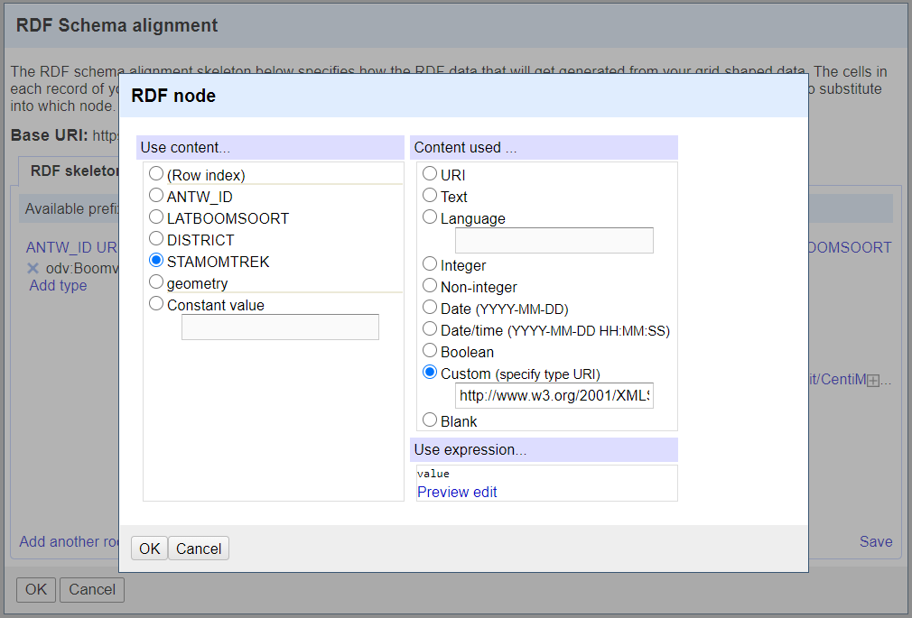

Hoe data beschrijven in lijn met OSLO Openbaar Domein?
Deze webpagina beschrijft een praktische handleiding voor steden en gemeenten
om de data van hun openbaar domein-inventaris te aligneren met OSLO Openbaar Domein.
We beschrijven stapsgewijs hoe we een voorbeelddataset kunnen omvormen naar
Linked Data. We doen dit startende van zowel tabulaire data als van diezelfde data in JSON-formaat.
Voorbeelddataset
We maken in deze handleiding gebruik van het voorbeeld van
de groeninventaris van de stad Antwerpen,
die het openbaar groen in Antwerpen in kaart brengt en zo
zorgt voor een handig overzicht van bomen, parken, planten, watervlaktes enzovoort.
In het voorbeeld zullen we werken met de
boom-dataset
en behandelen we dus een
Vegetatie Element.
Tabel 1 geeft acht attributen van drie willekeurige bomen uit de
Antwerpse boom-dataset weer. Elke rij beschrijft één unieke boom.
Tabel 1: Voorbeelddata van drie bomen uit de boom-dataset van Stad Antwerpen.
OBJECTID
ANTW_ID
LATBOOMSOORT
GENUS
DISTRICT
STAMOMTREK
geometry
x
y
16805215
63722
Tilia tomentosa 'Brabant'
Tilia
ANTWERPEN
72
4.394028
51.216636
16820158
37468
Ginkgo biloba 'Tremonia'
Ginkgo
ANTWERPEN
23
4.394560
51.216708
16805217
33394
Malus tschonoskii
Malus
ANTWERPEN
47
4.394963
51.216030
Figuur 1: Foto’s van de drie bomen in kwestie (bron: Google Street View).
Van data naar linked data
Vooraleer men aan de “technische” transformatie van de data kan beginnen,
moeten er eerst een aantal meer conceptuele zaken worden uitgeklaard.
De volgende vier stappen moeten hiervoor doorlopen worden.
Eerst moet bepaald worden of men de volledige dataset online wil publiceren,
dan wel een subset daarvan. Vaak zullen bepaalde eigenschappen immers slechts
betekenisvol zijn voor personen binnen dezelfde organisatie en bijgevolg
irrelevant voor externen. Overweeg dan ook om deze data niet te publiceren
om verwarring te vermijden. In de voorbeelddata van Tabel 1 zullen we
daarom de eigenschap OBJECTID weggelaten omdat deze geen semantische meerwaarde
heeft, noch relevant is voor uitwisseling met derden. (Dit is slechts een assumptie die we maken in dit voorbeeld.
Het is zeker mogelijk dat in de realiteit OBJECTID wel een meerwaarde heeft voor derden.) Verderop wordt duidelijk
waarom we ANTW_ID wel behouden.
Tabel 2: Voorbeelddata van de drie bomen na stap 1.
Nadat je bepaald hebt welke data je wilt publiceren,
neem je best OSLO Openbaar Domein
volledig door zodat je weet welke objecten en bijhorende
eigenschappen gedefinieerd zijn binnen deze standaard.
Vervolgens probeer je voor ieder van de objecten en eigenschappen
in jouw data een relevant concept te zoeken binnen OSLO Openbaar Domein.
Om deze mapping een waarde te kunnen toekennen,
maken we gebruik van de SKOS mapping-eigenschappen,
zoals weergegeven in Figuur 2.
Figuur 2: De SKOS mapping-eigenschappen.
Enkele voorbeelden verduidelijken:
"Auto" heeft een close match met "wagen".
"Auto" heeft een exact match met "personenvoertuig".
"Tafel" heeft een related match met "tafelpoot".
"Hond" heeft een broad match met "dier".
"Dier" heeft een narrow match met "hond".
Door in de applicatieprofielen over de concepten te hoveren met de muis,
wordt de URI van het concept zichtbaar. Door erop te klikken,
word je doorverwezen naar het vocabularium waar de respectievelijke term beschreven staat.
Merk op dat dit zowel een OSLO-vocabularium kan zijn (bv. voor Boomvorm - zie figuur 3)
als een extern vocabularium (bv. voor wetenschappelijke naam - zie figuur 4).
Figuur 3: De URI van de klasse Boomvorm.Figuur 4: De URI van het attribuut wetenschappelijke naam.
Tabel 3 geeft het resultaat van deze mappingsoefening weer voor de
eigenschappen en het object (Boom) in onze voorbeelddataset.
Tabel 3: SKOS-mapping van de concepten van de voorbeelddataset op OSLO OD.
Indien er concepten (klassen of eigenschappen) zijn die je niet kon mappen op een OSLO Openbaar Domein concept,
stel dan achtereenvolgens de volgende vragen.
Wil ik deze informatie publiceren?
Indien ja, bestaat er een bruikbaar concept binnen een andere OSLO standaard?
Indien nee, bestaat er een bruikbaar concept binnen een andere datastandaard?
De website van Linked Open Vocabularies kan hierbij een goed startpunt zijn.
Indien nee, zijn er drie opties:
Je logt een issue op Github om kenbaar te maken dat de standaard Openbaar Domein uitgebreid/aangepast moet worden.
Je definieert dit concept zelf (zie hieronder).
Je mapt dit concept niet (niet aangeraden).
Voor onze voorbeelddataset kunnen we geen equivalente eigenschap terugvinden in
OSLO Openbaar Domein voor de eigenschap GENUS.
Omdat deze informatie vervat zit in de wetenschappelijke soortnaam,
beslissen we om dit attribuut niet expliciet op te nemen.
We hadden echter ook kunnen beslissen om GENUS te mappen
op de equivalente eigenschap van de Darwin Core standaard.
Voor ieder individueel object waar we informatie over willen uitwisselen (hier: een Boomvorm)
moet een unieke identificator (URI) aangemaakt worden.
Voor richtlijnen over hoe deze URI het beste opgesteld wordt,
verwijzen we naar de URI-handleiding.
In ons voorbeeld zullen we hiervoor gebruik maken van de eigenschap ANTW_ID.
Merk op dat we ook gebruik hadden kunnen maken van de eigenschap OBJECTID.
Dit is een keuze voor de databeheerder.
Het is uiterst belangrijk dat voor de URI een uniek attribuut wordt gekozen
waarmee één specifieke boom wordt geïdentificeerd.
In de twee hieropvolgende secties werken we een concreet voorbeeld uit van hoe het men in de praktijk data kan omzetten naar linked data,
startende van tabulaire data en vervolgens van diezelfde data in JSON-formaat. We raden aan om met JSON(-LD) te werken indien mogelijk.
We verwijzen naar de OSLO Handleiding voor de Onwikkelaar
voor meer (technische) informatie over het belang en de verschillende mogelijkheden van Linked Data, en in het bijzonder van JSON-LD.
Van tabulaire data naar linked data
Het merendeel van de bestaande data is enkel beschikbaar in tabulair formaat zoals Excel of CSV-bestanden.
Het omzetten van deze tabulaire data naar linked data kan op verschillende manieren gebeuren.
De meest geautomatiseerde manier is om een transformatiescript te schrijven die de relevante triples genereert op basis van de tabulaire data.
Deze aanpak vereist echter wel een zekere programmeerervaring.
Hier stellen we een alternatieve en meer toegankelijke werkwijze voor die steunt op Open Refine.
Om via Open Refine met linked data formaten te kunnen werken,
is de RDF extensie nodig.
Eenmaal de software is geïnstalleerd,
kunnen de volgende stappen doorlopen worden om van tabulaire data naar linked data te gaan.
We importeren de data uit Tabel 1 (in .csv-formaat) in OpenRefine en maken een project aan.
De tabulaire data moet zo geordend zijn zodat elke rij één object (bv. een Boomvorm) beschrijft
en elke kolom een eigenschap van dat object (bv. stamomtrek).
De figuur hieronder geeft de geïmporteerde data weer. Via deze link kan je de dataset met de gegevens over deze drie bomen downloaden.
Vooraleer we kunnen starten met de mapping van de data naar OSLO Openbaar Domein,
moeten we eerst een aantal transformaties uitvoeren. Open Refine is echter een software-tool
die exact met dit doel voor ogen is ontwikkeld, i.e. het opschonen en transformeren van data.
Voor de geografische informatie werken we hier met het WKT-formaat.
OSLO laat daarnaast ook toe om met het GML-formaat te werken.
Merk op dat het mogelijk is om het gebruikte coördinatenstelsel mee te geven bij een WKT-literal (en bij een GML-literal), bv. "<http://www.opengis.net/def/crs/OGC/1.3/CRS84> POINT(33.95 -83.38)"^^<http://www.opengis.net/ont/geosparql#wktLiteral>.
Indien er echter geen coördinatenstelsel wordt gespecifieerd, wordt er standaard uitgegaan van WGS 84, het meest gebruikte coördinatenstelsel.
De kolommen [x] en [y] omvormen naar één kolom [geometry] in het WKT-formaat kan via (1) de functie Edit column > Join columns op de kolommen [x] en [y] met een spatie als separator (niet zichtbaar in de figuur).
Vervolgens kan men de vereiste prefix en suffix voor de WKT-literal toevoegen via (2) de functie Edit cells > Transform met als expressie "POINT(" + value + ")". Merk op dat we hier geen coördinatenstelsel expliciet definiëren.
Indien dit echter nodig is, kan dit eenvoudig via de bovenstaande expressie uit te breiden.
Het algemene idee van Linked Data is dat men van data gemakkelijk naar andere data kan doorverwijzen, gelijkaardig
aan hoe hyperlinks op het World Wide Web de ene webpagina aan de andere linken.
Hier maken we gebruik van Wegwijs, een databron met informatie over publieke organisaties,
om de URI van het District Antwerpen (https://data.vlaanderen.be/id/organisatie/OVO003105) terug te vinden.
Vervolgens kunnen we dan de tekstwaarde "District Antwerpen" in de kolom [DISTRICT] van onze voorbeeldataset vervangen door diens semantisch waardevollere URI, via de functie Edit cell > Replace.
Na deze laatste formatie, bekomen we de finale voorbeelddataset, zoals weergegeven in de onderstaande figuur, waarmee we verder aan de slag kunnen.
Nu dat stappen 1 tot 3 zijn uitgevoerd, kunnen we beginnen met onze voorbeelddataset semantisch te verrijken door alle data te mappen naar de relevante concepten uit OSLO Openbaar Domein.
Dit doen we via de RDF-extensie en meer specifiek, de functie Edit RDF Skeleton. Deze functie opent een venster waarin
we de volledige mapping kunnen specifiëren.
We starten met de benodigde vocabularia toe te voegen via Add (available prefixes).
Voor het vocabularium openbaar domein, bijvoorbeeld,
is de URI https://data.vlaanderen.be/ns/openbaardomein#
met od als prefix (deze prefix is vrij te kiezen). De verschillende taxonomieën, bijvoorbeeld Vegetatie-elementen, hebben ieder hun eigen vocabularium
en moeten dus ook afzonderlijk toegevoegd worden. In dit geval: https://data.vlaanderen.be/ns/openbaardomein/vegetatie# met als prefix odv.
Bepaal hoe de base URI voor nieuwe instanties van de aangemaakte entiteit (Boomvorm) eruit zullen zien.
In ons geval is dit https://antwerpen.be/id/boomvorm/.
In de URI-handleiding gaan we dieper in op de richtlijnen die gevolgd moeten worden
voor de samenstelling van een dergelijke URI.
Vervolgens moeten we bepalen welke eigenschap gebruikt zal worden om de base URI te vervolledigen om
een unieke URI te kunnen creëren per instantie. Dit kan via de functie (Row index) URI.
In ons voorbeeld gebruiken we de kolom ANTW_ID om unieke URI’s te creëren per Boomvorm.
Een URI van een Antwerpse boom wordt dus bijvoorbeeld https://antwerpen.be/id/boomvorm/63722.
Voeg het type toe van de instanties die gecreëerd worden.
Dit kan via de functie Add type.
In ons voorbeeld stelt iedere rij van de tabel een instantie van odv:Boomvorm voor.
Map de overige kolommen van de tabulaire data naar de eigenschappen van het model. Zie tabel 3 voor deze mapping.
Bijvoorbeeld: de kolom STAMOMTREK wordt gemapt op odv:stamomtrek.
Merk op dat we de kolom ANTW_ID al hebben gebruikt voor de URI. Omdat we deze kolom niet ook nog als
een attribuut willen opnemen, hebben we deze property verwijderd.
Ieder attribuut in OSLO heeft een verwacht type (ook wel "bereik" genoemd). Vaak is dit een primitief type, zoals boolean, string of integer.
Soms is dit verwacht type echter een andere klasse, bv. de eigenschap
beheerder
verwacht een
Organisatie
als type.
En in nog andere gevallen is dit verwacht type een complex datatype, bv. de eigenschap
geometrie
verwacht een
Geometrie
als type.
Het verschil tussen een klasse en een complex datatype is dat we voor een complex datatype niet de vereiste opleggen dat deze een URI heeft. Een complex datatype krijgt een "blank node identifier" binnen een bepaalde
data-uitwisseling, die enkel uniek is binnen die specifieke uitwisseling. Het datavoorbeeld verderop zal dit verduidelijken.
Voor drie van de vier eigenschappen die we hier gebruiken, moeten we bijgevolg nog een aantal extra stappen doorloppen.
De eigenschap "beheerder" verwacht een klasse (en dus een URI) als type en moet bijgevolg niet verder uitgewerkt worden.
De drie resterende eigenschappen bespreken we vervolgens.
Stamomtrek
De eigenschap
stamomtrek
verwacht het complexe datatype
Kwantitatieve Waarde
als type. Het idee is dat we de waarde van de stamomtrek ook semantisch verrijken. Als we bijvoorbeeld enkel de waarde "72" meegeven, is het niet duidelijk of dit centimeters of meters betreft. Alhoewel dit voor een
mens soms wel af te leiden valt uit de context, wordt het voor een machine onmogelijk gemaakt om hier verder mee te redeneren. Door zowel de waarde als de (standaard)eenheid mee te geven, kunnen enerzijds organisaties zelf kiezen
in welke eenheid ze hun waarden publiceren en anderzijds kan er machinaal met de data geredeneerd worden.
Via STAMOMTREK Cell kunnen we de content in "Blank" veranderen en hiermee een blank node creëren.
Vervolgens voegen we het type toe via Add type, zijnde Kwantitatieve Waarde, en de bijhorende properties
schema:value en schema:unitCode.
Via Configure? maken we duidelijk dat STAMOMTREK (Cell) de waarde geeft voor value met als "Content used" een xsd:Double,
en voor unitCode geven vullen we de constant value "http://qudt.org/vocab/unit/CentiM" in met als "Content used" URI,
waarmee we weergeven dat de stamomtrek in centimeters is geïnventariseerd.

Wetenschappelijke soortnaam
De eigenschap
wetenschappelijke soortnaam
verwacht een
skos:Concept
als type. Idealiter maakt men een codelijst aan met behulp van SKOS (Simple Knowledge Organization System) of gebruikt men een bestaande codelijst.
Ieder concept in een SKOS-codelijst wordt geïdentificeerd met behulp van een URI. Indien men een dergelijke codelijst heeft, kan men simpelweg de URI gebruiken als waarde van de wetenschappelijke soortnaam (idem zoals dit gebeurt voor de Organisatie bij de eigenschap beheerder).
Hier maken we nu (ter vereenvoudiging) blank nodes aan voor de benodigde concepten met als enige eigenschap skos:prefLabel, zonder daarbij een volledige skos:ConceptScheme uit te werken.
De uit te voeren stappen zijn gelijkaardig aan deze voor stamomtrek. De onderstaande figuren geven de te bekomen configuratie weer.
Geometrie
Het bijhouden van de locatie van een object, zoals een boomvorm,
gebeurt via het complexe datatype Geometrie.
Deze wordt verder onderverdeeld in
Punt,
Lijnstring en
Polygoon
Er zijn twee attributen gedefinieerd voor Geometrie: geosparql:asWKT, well-known text representation of geometry,
en geosparql:asGML, Geography Markup Language.
We laden de hierboven vermelde vocabularia in OpenRefine in en voeren de benodigde stappen uit zoals we deden voor stamomtrek en wetenschappelijke soortnaam. De onderstaande figuren geven de te bekomen configuratie weer.
Nadat de RDF skeleton volledig geconfigureerd is, kunnen we de data exporteren.
OpenRefine biedt een export-functie aan in Turtle- (.ttl) en RDF/XML-syntax (.rdf).
Via verschillende online tools kan men deze output ook nog naar andere formaten transformeren, zoals N-Triples, RDFa, JSON-LD etc.
Hieronder geven we de bekomen output in deze twee formaten weer.
Datavoorbeeld: Turtle-syntax met OSLO Openbaar Domein linked data over drie willekeurige bomen in Antwerpen, gegenereerd met Open Refine. Door over de verschillende elementen te hoveren, wordt er extra informatie weergegeven. Merk op dat we hier werken met de "embedded approach", waarbij de blank nodes impliciet verwerkt worden. Bij het volgende datavoorbeeld in RDF/XML werken we wel met expliciete blank nodes. Deze manier van werken is ook mogelijk in de Turtle-syntax.
Het gebruik van het gegevensformaat JSON voor data-uitwisseling is de laatste jaren
sterk toegenomen, mede dankzij de proliferatie van (REST) API’s.
Datavoorbeeld X geeft dezelfde data uit Tabel 2 weer,
maar nu in JSON-formaat. Om het mogelijk te maken om de semantiek
van de data mee te geven aan dergelijke JSON-bestanden,
is JSON-LD (JSON Linked Data) ontwikkeld.
JSON-LD laat ontwikkelaars toe om applicaties en diensten die gebruik
maken van JSON, met een minimale inspanning Linked Data enabled te maken.
Aanbeveling
We raden aan om met data in JSON-formaat te werken,
indien deze voorhanden is,
aangezien het minder werk vereist om deze om te zetten naar linked data,
dan voor tabulaire data.
Datavoorbeeld X: JSON-bestand met data over drie willekeurige bomen uit de boom-dataset van Antwerpen (JSON-equivalent van Tabel 2 zonder GENUS).
De JSON-LD 1.1 specificatie werd gepubliceerd door W3C als een Proposed Recommendation. Versie 1.0 is de stabiele specificatie,
maar we raden aan om met versie 1.1 te werken omwille van verschillende verbeteringen.
De meest recente specificatie en andere documentatie is terug te vinden op json-ld.org.
JSON-LD kenmerkt zich door het toevoegen van o.a. de onderstaande elementen aan een klassiek JSON-object. Voor een beschrijving van de volledige
functionaliteit verwijzen we echter naar de specificatie.
@context: bevat een oplijsting van de keys die doorheen het JSON(-LD) object gebruikt worden samen met een link (URI) die verwijst naar hun definitie en, indien relevant, een type die aangeeft wat de verwachte value is voor een bepaalde key. Op deze manier wordt de “context”, i.e. metadata, meegegeven aan de ontvanger van het JSON object.
@id: een unieke identificator voor objecten.
@type: het type van het object.
Het @context-element heeft dus als doel om de semantiek samen met de data te ontsluiten.
Dit kan op verschillende manieren gebeuren. We verwijzen naar de OSLO handleiding voor de ontwikkelaar voor meer informatie omtrent deze verschillende mogelijkheden.
hergebruik van een bestaande contextdefinitie;
combineren van meerdere bestaande contextdefinities;
gebruik van eigen termen;
bestaande contextdefinitie uitbreiden; en/of
overschrijven van contextdefinities.
Voor de bestaande OSLO applicatieprofielen, waaronder Openbaar Domein,
bestaan echter herbruikbare contextdefinities in JSON-LD-formaat,
waarnaar verwezen kan worden vanuit een JSON-LD-object. Deze zijn terug te vinden
onderaan de webpagina van de applicatieprofielen (zie bijvoorbeeld de JSON-LD-context van het applicatieprofiel Waterdeel).
In Datavoorbeeld X geven we dit JSON-LD-contextbestand ook weer.
Merk op dat ieder concept een URI krijgt als identificator;
voor properties wordt dit aangeduid met de key @id.
Om hier invulling aan te geven kan gebruik gemaakt worden van absolute URI’s,
relatieve URI’s of ‘blank node identifiers’.
Het type van een bepaald concept wordt meegegeven met behulp van @type.
Zo heeft FysiekObject.begindatum bijvoorbeeld een dateTime als type.
Met "@type": "@id" wordt aangeduid dat men een URI (of blank node identifier) als input verwacht.
De elementen in het @context-element worden gebruikt om de data in het originele JSON-bestand semantisch te verrijken.
Deze elementen beschrijven hoe de data zich verhoudt tot de gebruikte vocabularia, i.e. de mapping.
Eerst moeten echter de benodigde JSON-LD-contextbestanden van deze vocabularia ingeladen worden, zoals hieronder weergeven.
De lijnen in bold zijn steeds de lijnen die gewijzigd zijn t.o.v. de vorige stap (in dit geval, het originele JSON-bestand).
Datavoorbeeld X: JSON-bestand van de drie bomen na stap 1.
Vervolgens moet men bepalen hoe de base URI voor nieuwe instanties van de aangemaakte entiteit (Boomvorm) eruit zullen zien.
In ons geval is dit https://antwerpen.be/id/boomvorm/, wat we meegeven via de key @base.
In de URI-handleiding gaan we dieper in op de richtlijnen die gevolgd moeten worden
voor de samenstelling van een dergelijke URI.
Via "ANTW_ID": "@id" geven we aan dat de eigenschap ANTW_ID gebruikt zal worden om de base URI te vervolledigen om
een unieke URI te kunnen creëren per instantie van Boomvorm. Een URI van een Antwerpse boom wordt dus bijvoorbeeld https://antwerpen.be/id/boomvorm/63722.
Merk op dat men een string verwacht om de URI te vervolledigen, terwijl ANTW_ID een integer is. Deze data moet dus getransformeerd worden.
Datavoorbeeld X: JSON-bestand van de drie bomen na stap 2.
In deze stap maken we duidelijk wat het type is van de objecten die beschreven worden in het JSON-bestand.
Dit kan via de key @type, met in dit voorbeeld de waarde Boomvorm.
Datavoorbeeld X: JSON-bestand van de drie bomen na stap 3.
Regelmatig wordt het type van het object echter meegeven met behulp van een attribuut, bv. TYPE. Indien dit het geval zou zijn,
dan zou men eenvoudigweg via de context kunnen laten weten dat het attribuut TYPE overeenkomt met @type via "TYPE": "@type".
Bovendien zou het ook kunnen dat men wel een equivalent type kan terugvinden in OSLO Openbaar Domein,
maar dat de naamgeving niet exact overeenkomt met deze die intern gebruikt wordt, bv. "boom" i.p.v. "Boomvorm".
Ook dit kan men in de context meegeven via "boom": "Boomvorm".
Het volgende datavoorbeeld geeft deze situatie weer.
Merk op dat het helaas niet mogelijk is om in de context mee te geven dat alle objecten in het JSON-bestand van hetzelfde type zijn.
Dit moet steeds per individueel object expliciet beschreven worden. Het is daarnaast wel mogelijk om objecten van verschillende types in één JSON-LD-bestand te combineren.
Datavoorbeeld X: JSON-bestand van de drie bomen na stap 3 (alternatief).
Vervolgens mappen we de overige attributen in het JSON-bestand op de respectievelijke klassen en attributen uit OSLO Openbaar Domein.
Zie Tabel 3 voor deze mapping.
Voor de concepten uit OSLO Openbaar Domein, gebruiken hiervoor de naamgeving uit het JSON-LD-contextbestand.
De eigenschap
stamomtrek
verwacht het complexe datatype
Kwantitatieve Waarde
als type. Het idee is dat we de waarde van de stamomtrek ook semantisch verrijken. Als we bijvoorbeeld enkel de waarde "72" meegeven, is het niet duidelijk of dit centimeters of meters betreft. Alhoewel dit voor een
mens soms wel af te leiden valt uit de context, wordt het voor een machine onmogelijk gemaakt om hier verder mee te redeneren. Door zowel de waarde als de (standaard)eenheid mee te geven, kunnen enerzijds organisaties zelf kiezen
in welke eenheid ze hun waarden publiceren en anderzijds kan er machinaal met de data geredeneerd worden.
Het attribuut waarde van het complexe datatype Kwantitatieve Waarde heeft een Getal als verwacht type,
waarbij het open wordt gelaten of dit een integer, double of een ander numeriek datatype moet zijn.
In deze context, beslissen we om het te instantiëren als een xsd:Double.
Daarnaast importeren we ook nog SKOS om de wetenschappelijke soortnaam te kunnen mappen (zie verder).
Datavoorbeeld X: JSON-bestand van de drie bomen na stap 4.
Voor de geografische informatie werken we hier met het WKT-formaat.
OSLO laat daarnaast ook toe om met het GML-formaat te werken.
Merk op dat het mogelijk is om het gebruikte coördinatenstelsel mee te geven bij een WKT-literal (en bij een GML-literal), bv. "<http://www.opengis.net/def/crs/OGC/1.3/CRS84> POINT(33.95 -83.38)"^^<http://www.opengis.net/ont/geosparql#wktLiteral>.
Indien er echter geen coördinatenstelsel wordt gespecifieerd, wordt er standaard uitgegaan van WGS 84, het meest gebruikte coördinatenstelsel.
We gebruiken de key @value om de eigenlijke waarde van het Punt mee te geven.
Daarnaast transformeren we ook de de stamomtrek-gegevens zoals beschreven in stap 4.
KwantitatieveWaarde.standaardEenheid heeft de waarde "http://qudt.org/vocab/unit/CentiM", waarmee we weergeven dat de stamomtrek in centimeters is geïnventariseerd.
Datavoorbeeld X: JSON-bestand van de drie bomen na stap 5.
Het algemene idee van Linked Data is dat men van data gemakkelijk naar andere data kan doorverwijzen, gelijkaardig
aan hoe hyperlinks op het World Wide Web de ene webpagina aan de andere linken.
Hier maken we gebruik van Wegwijs, een databron met informatie over publieke organisaties,
om de URI van het District Antwerpen (https://data.vlaanderen.be/id/organisatie/OVO003105) terug te vinden.
Vervolgens kunnen we dan de tekstwaarde "District Antwerpen" vervangen door diens semantisch waardevollere URI.
Datavoorbeeld X: JSON-bestand van de drie bomen na stap 6.
Ten slotte, veranderen we de features-key uit het originele GeoJSON-bestand in @graph,
omdat we meerdere objecten in één JSON-LD-bestand willen combineren.
Na deze laatste stap bekomen we het finale JSON-LD-bestand, dat ook via de
JSON-LD playground
te bekijken is.
Datavoorbeeld X: JSON-bestand van de drie bomen na stap 7.

{kind=link}
{kind=link}
{kind=link}